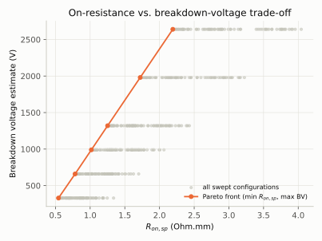

Write-up · Device physics
Searching the AlGaN/GaN HEMT design space instead of picking from it
I built an analytical AlGaN/GaN HEMT model that evaluates a design in milliseconds, then swept 432 combinations of gate length, gate-drain spacing, barrier thickness and Al fraction. Every design on the on-resistance versus breakdown-voltage Pareto front uses the shortest gate and the highest Al fraction, and buys voltage through gate-drain spacing. The search found that rule without being told it.
The question
My undergraduate thesis compared a few hand-picked gate structures in Silvaco TCAD. That kind of study is careful but narrow: each structure is a full simulation, so you can only afford a handful, and you choose them before you know where the good designs are. I wanted to know whether a lighter model could show the shape of the whole design space at once, cheaply enough to search it automatically.
Approach
The model is built from published device physics, not fitted curves:
- Channel charge. Ambacher’s spontaneous and piezoelectric polarization model sets the sheet charge at the AlGaN/GaN interface. The 2DEG density is then solved self-consistently against a single-subband Fermi-level relation.
- Current. A velocity-saturated charge-sheet model uses that charge, with source and drain access resistance solved against the terminal current. This is what makes the on-resistance/breakdown trade-off a real mechanism rather than an assumption.
- Figures of merit. Vth, gm, subthreshold swing, DIBL, Ion, Ron,sp and a breakdown estimate are read off the simulated curves, the way a TCAD post-processing script would read them.
A script, verify.py, checks 11 of the model’s claims against closed-form theory, and 18 unit tests run in CI on every push. The whole 432-point sweep takes about five seconds.
Result

| Lg (nm) | Lgd (µm) | Barrier (nm) | xAl | Ron,sp (Ω·mm) | BV (V) |
|---|---|---|---|---|---|
| 100 | 1 | 20 | 0.30 | 0.544 | 330 |
| 100 | 2 | 20 | 0.30 | 0.783 | 660 |
| 100 | 4 | 25 | 0.30 | 1.252 | 1320 |
| 100 | 8 | 25 | 0.30 | 2.192 | 2640 |
Two findings are worth stating plainly. First, the front runs almost entirely along gate-drain spacing: breakdown voltage rises in proportion to the spacing (the model’s estimate is linear in it), and the price is on-resistance, paid through the access region’s sheet resistance. Second, the barrier shifts from 20 to 25 nm partway along the front. A thicker barrier holds a slightly denser 2DEG, which lowers the access-region resistance; once the drift region is long enough for that resistance to dominate, the saving outweighs the weaker gate control.
What the model cannot tell you
This is an analytical model, not TCAD, and some of its parts are deliberately approximate. Breakdown is a parallel-plate estimate that ignores field crowding at the gate edge. Subthreshold swing and DIBL come from an aspect-ratio proxy, so they show the right trend but not layout-specific numbers. Threshold voltages come out more negative than in fabricated devices, because the model applies the full polarization charge with no surface or trap charge to offset it. The trends across the sweep are the result; the absolute numbers are a plausibility check.
What I would do next
Replace the breakdown estimate with a two-dimensional field-crowding correction, add a small-signal model to study the RF side of the same trade-off, and cross-check a few points against a 1-D Schrödinger–Poisson solve to bound the single-subband approximation.